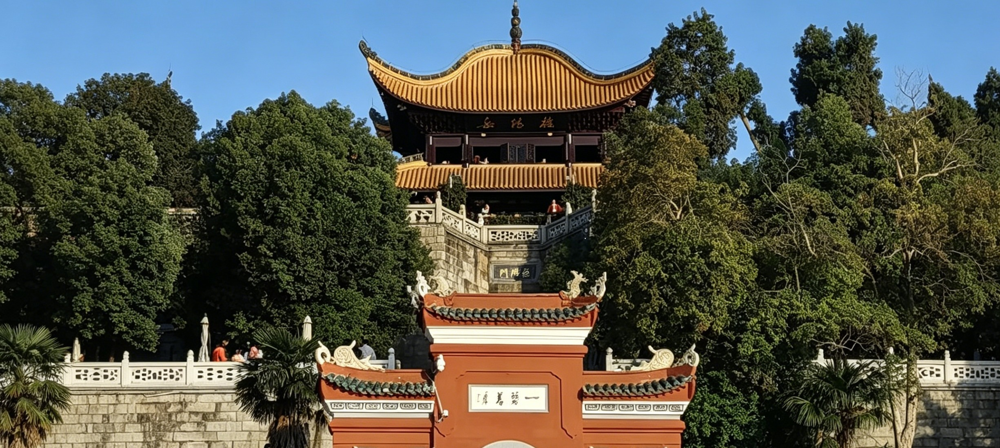

关于我们

公司位于岳阳北大门.东接沟通南北的京广复线、高速铁路;南连闻名天下的岳阳楼;西临风光绮丽的洞庭湖,遥对青螺滴翠的爱情岛-君山;北靠通江达海的城陵矶港。我司是以洞庭湖天然优质石英为原料生产石英砂滤料和砾石承托层的专业厂家。石英砂滤料和砾石承托层适用于城市饮用水处理和工矿企业净水厂及污水处理的各种滤池。自1963年成立以来,产品于1984年通过建设部技术鉴定,并经天津、武汉、珠海、桂林、株洲、长沙、哈尔滨等15个省市的几百家水厂和污水处理厂的使用,因其质量稳定可靠,净水效果好,被编于《给排水设计手册》推荐全国净水水厂使用。同时被推荐参加1987年国家标准总局举办“全国采用国际准展鉴会”为了推动过滤技术发展,我司可为用户提供各种精度、均质、均粒滤料。2008年原厂经股改启用新名岳阳市北门石英砂滤料科技有限公司。同时我司还生产油田压裂砂,铸造型砂等。我司现有三个生产基地年产量近50000吨本公司秉承“顾客至上，锐意进取”的经营理念，坚持“客户第一”的原则为广大客户提供优质的服务。我司始终将产品质量视为企业发展的生命线，依托洞庭湖丰富的天然石英砂资源，采用先进的生产工艺和严格的质量控制体系，确保每一批石英砂滤料和砾石承托层都符合国家及行业标准。在生产过程中，从原料的甄选、破碎、筛分、水洗、烘干到成品检验，每一个环节都有专业技术人员进行严格把关，力求为客户提供粒度均匀、含泥量低、硬度高、化学性能稳定的优质滤料产品。公司拥有一支经验丰富、技术过硬的研发团队，不断致力于滤料产品的创新与改进，针对不同客户的水质特点和处理需求，能够提供定制化的滤料解决方案，以满足各类净水和污水处理工程的多样化要求。 热烈欢迎各新老朋友来函来电洽谈业务、亲临指导商讨合作事宜。